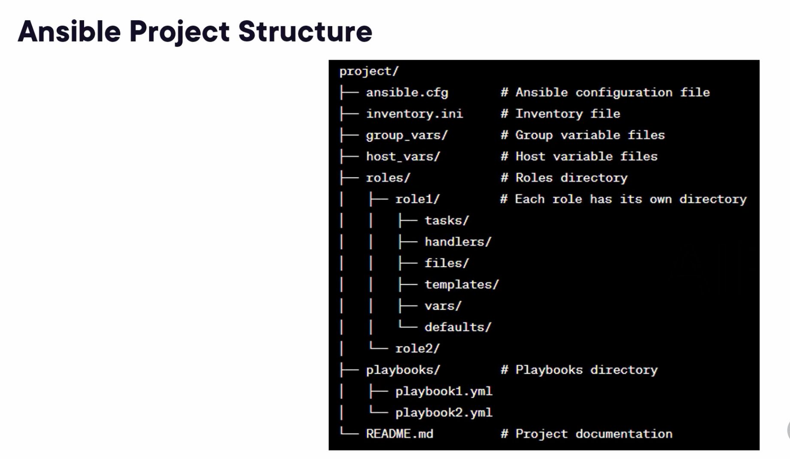
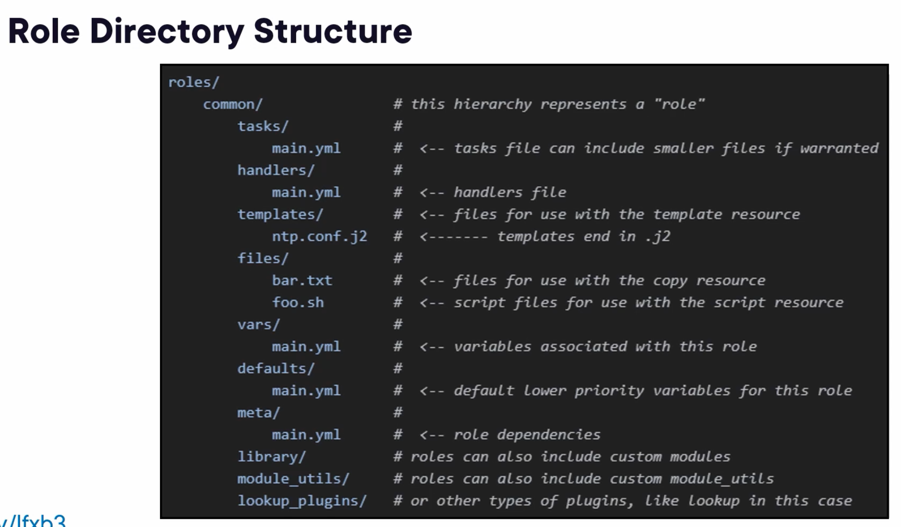
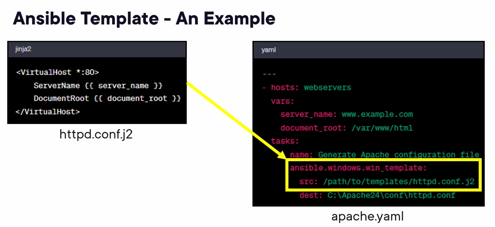

Ansible Commands
| Command |
Description |
| ansible --version |
This command is used to get ansible version |
| ansible-config dump |
This command is used to get ansible configuration |
| ansible-config dump | grep DEFAULT_HOST_LIST |
This command is used to get ansible DEFAULT_HOST_LIST |
| sudo nano /etc/ansible/ansible.cfg |
This command is used to ansbible configuration |
| ansible-config init --disabled > ansible.cfg |
This command is used to create default configuration, all the configurations are commented as we asked for --disabled |
| ansible all -m ping -v > ansible.cfg |
This command is used to ping configured host in ini file, we can give all or section name or hostname, all will try to ping all the hosts. |
| eval "$(ssh-agent -s)" |
This command is used to store in memory passcode of ssh file |
| ansible web -m shell -a 'cat /etc/os-release' -v |
This command is used to connect to web section of hosts and use shell module to get os version -a is for attributes |
| ansible --help |
This command is used to get help on ansible |
| ansible-doc -l |
This command is used to all the modules available for ansible |
| ansible-doc ping |
This command is used to get help on the ping module, with e.g. |
| ansible all -m copy -a "src=/etc/ansible/files/test.config dest=/etc/test.config |
This command is used to copy test.comfig to all hosts |
| docker pull ubuntu |
This command is used to get latest ubuntu image |
| docker run --rm -it ubuntu:latest |
This command is used to create ubuntu container |
| sudo apt install python3 |
This command is used to install python3 on ubuntu container |
| ansible-galaxy role init test |
This command is used to initialize a role with name test |
| ansible-galaxy -h |
This command is used to get help on ansible galaxy |
| ansible-galaxy role -h |
This command is used to get help on role |
| ansible-galaxy role install bsmeding.docker |
This command is used to install bsmeding.docker role |
| ls ~/.ansible/roles |
This command is list the installed roles. |
| ansible-galaxy role init test |
This command is used to create and scaffold the new role |
| asnible host.ini -m include_role -a name=my-role |
This command is used to invoke the role from the Ansible CLI |
| ansible-playbook commands |
| ansible-playbook mp.yml |
Command to run mp.yml playbook |
| ansible-playbook -i inv.ini mp.yml |
Command to run mp.yml playbook with specific an inventory file |
| ansible-playbook --limit "web,db" mp.yml |
Command to run mp.yml playbook limit to a subset of hosts |
| ansible-playbook --tags "dev" mp.yml |
Command to run mp.yml playbook conditional application with tags |
| ansible-playbook --become --become-user mp.yml |
Command to run mp.yml playbook, Elevate privileges to a non-root user |
| ansible-playbook --vault-password-file vault_pass.txt mp.yml |
Command to run mp.yml playbook, specifu an Anisble Vault password file |
| ansible demo |
| ansible --version |
Command to get ansible version |
| ssh-copy-id -f "-o IdentityFile ~/Developer/Mallikarjun/ec2.pem" ubuntu@65.2.70.183 |
Command to make manage host as password less authentication |
| vi hosts.ini |
Commnad to create host.ini file |
| ansible all -i hosts.ini -m ping |
Command to ping all the hosts |
| ansible-playbook --help |
Command to get ansible-playbook help |
| ansible-playbook -i hosts.ini powershell.yml |
Command to run palybook with powershell.yml, -v is for verbose, we can give vvv, the more v's we add the more verboes |
| ansible-doc user |
This command get the help for user module |
| cut -d: -f1 /etc/passwd |
This command is to get the list of all users on ubuntu |
| ansible-galaxy inti webserver |
This command will initialize webserver role |


